PostgreSQL是数据库世界里的“锤子”。它既广为人知，又容易获得，还很坚固，如果你抡得够猛，它所能解决的问题数量惊人。如果不了解这个最常用的工具，你就不可能成为建筑专家。
PostgreSQL是一个关系数据库管理系统，即它是以集合理论为基础的系统，在实现上，它定义为一些二维表，表中包含数据行和具有严格数据类型的列。虽然人们对新兴数据库越来越有兴趣，但关系数据库仍然是最流行的数据库，而且这种趋势可能会保持很长一段时间。
关系数据库流行的原因，不仅在于其庞大的特性集（触发器、存储过程、高级索引）、数据的安全性（符合ACID），或符合大多数人的思维方式（许多程序员以关系的方式说话和思考），还在于它们的查询灵活性。与其他某些数据存储库相比，你不必事先知道要如何使用这些数据。如果关系数据模式是规范的，那么查询就可以很灵活。PostgreSQL是最好的开源关系数据库例子。
在本书提到的数据库中，PostgreSQL是历史最悠久、实战经验最丰富的。它的扩展包括自然语言解析、多维索引、地理查询、自定义数据类型等。它具有高级的事务处理能力，支持十几种不同语言的存储过程，能在各种平台上运行。PostgreSQL 内置支持 Unicode、序列、表继承、子查询，而且是市场上遵循ANSI SQL标准最好的关系数据库之一。它快速可靠，可以处理 TB 量级的数据，并且已经在一些高知名度的生产系统上得到验证，如Skype、法国储蓄银行（CNAF）和美国联邦航空局（FAA）。
那么，名字是怎么来的呢
自1995年以来，PostgreSQL就以目前的项目形态存在，但它的起源相当久远。20世纪 70 年代初，最初的项目产生于加州大学伯克利分校，叫做交互式图形和检索系统（Interactive Graphics and Retrieval System），或简称为“Ingres”。在 20世纪 80年代，推出了一个改进版本，post-Ingres，简称为Postgres。虽然该项目于1993年在伯克利大学终结，但开源社区取得了该项目的源码，并将其发布为PostgreSQL95。后来于1996年更名为PostgreSQL，表示对新的SQL标准的支持，此后一直沿用这个名字。
可以用多种方式安装PostgreSQL，这取决于你的操作系统1。除了安装核心组件，还需要在PostgreSQL上安装扩展包，用到以下扩展包：tablefunc、dict_xsyn、fuzzystrmatch、pg_trgm和cube。可以参考网站上的安装指南2。
注释1 http://www.postgresQL.org/download/
注释2 http://www.postgresQL.org/docs/9.0/static/contrib.html
安装PostgreSQL之后，使用下面的命令创建一个名为book的数据库：
$ createdb book
接下来，我们将在本章中使用book数据库。运行下面的命令，以确保你需要的扩展包已经正确安装。
$ psql book -c "SELECT '1'::cube;"
如果你看到一条错误消息，请查看官网的文档，以获得更多的信息。
我们虽然不会把你当作是一个关系数据库专家，但是确实会假设你曾用过一两个数据库。这些数据库很可能是关系型的。我们将开始创建自己的数据表，并填充数据。然后尝试查询一些行。最后探讨关系数据库中非常重要的表联接。
就像大多数数据库一样，Postgres 提供一个后台服务进程（Backend），它完成所有数据处理工作，还提供一个命令行客户端程序，通过它连接到运行中的服务进程。服务进程默认监听5432端口，可以用psql这个命令行工具连接。
数学关系
关系数据库的名称源于它们包含关系（即表），它们是元组（即行）的集合，元组又将属性映射到原子值（例如，{name: 'Genghis Khan'，p.died_at_age: 65}）。可用的属性通过头部的属性元组来定义，这些属性映射到某个域或限制的类型（即列；例如，{name: string，age: int}）。这是关系结构的要点。
尽管听起来数学味很浓，但是实现比名字所暗示的更具有现实意义。那么，为什么要提到这些？我们正试图说明，关系数据库的关系是因为它的数学基础，不是因为表通过外键彼此“关联”。这样的限制是否存在并不是关键。
虽然许多数学关系你看不到，但模型的力量肯定是蕴藏在数学之中。这种魔法允许用户提出功能强大的查询，然后让系统基于预定义的模式进行优化。RDBMS 基于集合理论的一个分支，名为关系代数，它包括选择（WHERE...）、投影（SELECT...）、笛卡尔积（JOIN...）等操作，如图2-1所示。
如果将关系想象为一张物理表（数组的数组，在数据库入门课中无数次重复过），可能在实践中造成痛苦，如编写遍历所有行的代码。关系查询的描述性远胜于此，它源于一个数学分支，名为元组关系演算，可以转换为关系代数。PostgreSQL 和其他的 RDBMS 通过执行这个转换优化了查询，简化了代数运算。你可以看到，图2-2中的SQL，与图2-1中的SQL是一样的。
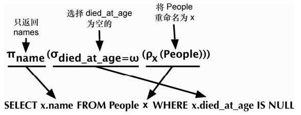
图2-1 关系代数和SQL
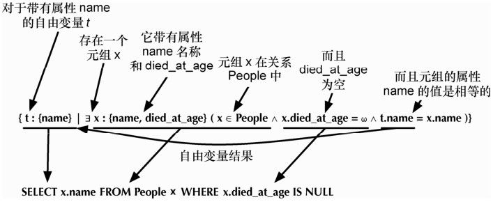
图2-2 元组关系演算和SQL
$ psql book
以管理员用户运行的话，PostgreSQL的提示符是数据库的名字后面跟一个‘#’，如果是普通用户，后面跟的是‘$’。这个命令行程序的内置文档是所有命令行程序中最好的。输入‘\h’，可以列出有关SQL命令的信息，\? 列出以反斜杠开始的psql特有命令的帮助信息。可以使用下列方式找到每个SQL命令的使用详细信息：
book=# \h CREATE INDEX
Command: CREATE INDEX
Description: define a new index
Syntax:
CREATE [ UNIQUE ] INDEX [ CONCURRENTLY ] [ name ] ON table [ USING method ]
( { column | ( expression ) } [ opclass ] [ ASC | DESC ] [ NULLS { FIRST | ...
[ WITH ( storage_parameter = value [, ... ] ) ]
[ TABLESPACE tablespace ]
[ WHERE predicate ]
在我们深入探讨PostgreSQL之前，最好先熟悉这个有用的工具。还可以熟悉一些常见命令值，如SELECT或CREATE TABLE。
PostgreSQL遵循SQL惯例，称关系为表（TABLE），属性为列（COLUMN），元组为行（ROW）。虽然你可能会遇到一些数学术语，如关系、属性和元组，为了保持一致性，我们将使用这些术语，如关系、属性和元组。有关这些概念的更多信息，请参阅 2.2 节的“数学关系”。
关于CRUD
CRUD是一个助记符，帮助记忆数据管理基本操作：创建、读取、更新和删除（Create， Read，Update，Delete）。这些操作一般对应插入新记录（创建），修改现有记录（更新），删除不再需要的记录（删除）。你使用数据库时所有的其他操作（你可以梦想到的任何疯狂查询）都是读操作。如果能进行CRUD操作，你就能做任何事。
PostgreSQL是关系型的数据管理系统，所以需要事先进行设计。要先设计好数据库的表，然后插入符合数据库定义的数据。
创建表包括为它命名，定义所有列及其类型，以及定义（可选的）约束信息。每张表都应该指定唯一的标识符列，以标识特定的行。该标识符称为主键（PRIMARY KEY）。创建countries表的SQL语句如下所示：
CREATE TABLE countries (
country_code char(2) PRIMARY KEY,
country_name text UNIQUE
);
这张新表将存储一些行，其中每一行由两个字节的国家代码作为标识，国家名也是唯一的。这两列都有约束，主键约束 country_code 列不允许有重复的国家代码，所以只有一个 us 和一个 gb 可以存在表中。尽管 country_name 不是主键，但是明确地给予country_name类似的唯一性约束。可以用如下语句插入几行来填充这张counties表。
INSERT INTO countries (country_code, country_name)
VALUES ('us','United States'), ('mx','Mexico'), ('au','Australia'),
('gb','United Kingdom'), ('de','Germany'), ('ll','Loompaland');
让我们来测试一下唯一性约束。如果尝试添加包含重复的 country_name 的行，就会因为唯一性约束而不允许插入。约束是PostgreSQL这样的关系数据库用来确保数据完整的方法。
INSERT INTO countries
VALUES ('uk','United Kingdom');
ERROR: duplicate key value violates unique constraint "countries_country_name_key"
DETAIL: Key (country_name)=(United Kingdom) already exists.
通过SELECT...FROM table语句进行查询，可以验证相关的行是否已经插入。
SELECT *
FROM countries;
country_code | country_name
-------------+---------------
us | United States
mx | Mexico
au | Australia
gb | United Kingdom
de | Germany
ll | Loompaland
(6 rows)
根据正规的地图，可以知道 Loompaland 不是真实存在的地方，所以让我们从表中删除它。用WHERE子句指定要删除的行，country_code等于ll的行将被删除。
DELETE FROM countries
WHERE country_code = 'll';
只有实际存在的国家留在了countries表中，让我们再添加一个cities表。为保证所有插入的country_code都在countries表中，将添加关键字REFERENCES。因为country_code列引用了另一张表的键，所以它称为外键约束。
CREATE TABLE cities (
name text NOT NULL,
postal_code varchar(9) CHECK (postal_code <> ''),
country_code char(2) REFERENCES countries,
PRIMARY KEY (country_code, postal_code)
);
这一次，cities表中的name列的约束是不允许其值为NULL的。postal_code列的约束，是其值不能是空字符串（<>表示不等于）。
此外，因为主键唯一地标识一行，所以定义了一个复合键：country_code +postal_code。它们共同作为一行的唯一的标识符。
Postgres 也有丰富的数据类型，刚才看到了三种不同的字符串表示：text（任意长度的字符串），varchar（9）（长度可达9个字节的字符串）和char（2）（正好两个字节的字符串）。
定义了数据表后，让我们插入Toronto，CA。
INSERT INTO cities
VALUES ('Toronto','M4C1B5','ca');
ERROR: insert or update on table "cities" violates foreign key constraint
"cities_country_code_fkey"
DETAIL: Key (country_code)=(ca) is not present in table "countries".
这个操作失败并不是什么坏事！因为 country_code 需要参考 countries，所以 country_ code必须存在于 countries表中，这称为保持参照完整性，参见图2-3，它确保数据始终是正确的。值得指出的是，NULL 对 cities.country_code是有效的，因为NULL代表一个值空缺。如果你不想允许country_code引用为NULL，可以这样定义cities表的列：country_code char（2）REFERENCES countries NOT NULL。
现在我们再试试插入一个美国城市的数据。
INSERT INTO cities
VALUES ('Portland','87200','us');
INSERT 0 1
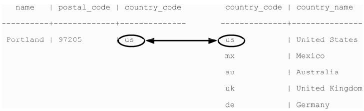
图2-3 PREFERENCE关键字约束字段参照另一张表的主键。
当然，这是一次成功的插入。但是我们输入了错误的邮政编码。波特兰（Portland）正确的邮政编码是97205，但我们不必删除并重新插入，可以直接更新这一行。
UPDATE cities
SET postal_code = '97205'
WHERE name = 'Portland';
现在已经可以创建、读取、更新、删除表中的行了。
在本书中学习的所有其他数据库，也都可以执行CRUD操作。但PostgreSQL这样的关系数据库有独特的能力，能够在读取表时对表进行联接。联接本质上是以某种方式联接两个独立的表，并返回一张结果表。这有点像拼字游戏，打散单词的字母卡片，重新拼接字母，从而得到新的词。
联接的基本形式是内联接（inner join）。最简单的形式就是，使用ON关键字指定匹配的两列（每张表一列）
SELECT cities.*, country_name
FROM cities INNER JOIN countries
ON cities.country_code = countries.country_code;
country_code | name | postal_code | country_name
-------------+---------+-------------+----------------
us | Portland | 97205 | United States
联接返回单张表，其中包含cities表的所有列的值，再加上匹配的countries表中country_name的值。
也可以联接诸如cities这样有复合主键的表。为了测试复合联接，我创建一张新表，来存储场地（venue）的列表。
某个国家和一个邮政编码组成一个场所。外键必须引用 Cities 表的两个主键列。（MATCH FULL是一个约束，确保两个值都存在，或两者均为NULL。）
CREATE TABLE venues (
venue_id SERIAL PRIMARY KEY,
name varchar(255),
street_address text,
type char(7) CHECK ( type in ('public','private') ) DEFAULT 'public',
postal_code varchar(9),
country_code char(2),
FOREIGN KEY (country_code, postal_code)
REFERENCES cities (country_code, postal_code) MATCH FULL
);
其中venue_id列是一种常见的主键设置：设置为自动递增整数（1，2，3，4，…）。可以使用 SERIAL 关键字来定义这个标识符（ MySQL 有一个类似的构造，称为AUTO_INCREMENT）。
INSERT INTO venues (name, postal_code, country_code)
VALUES ('Crystal Ballroom', '97205', 'us');
虽然没有设置venue_id的值，但创建行时会填充它。
回到复合联接。联接enues表和cities表需要用到两个外键列。为了减少输入量，可以在表名后面直接加别名，它们中间的AS是可选的（例如，venues v或venues AS v）。
SELECT v.venue_id, v.name, c.name
FROM venues v INNER JOIN cities c
ON v.postal_code=c.postal_code AND v.country_code=c.country_code;
venue_id | name | name
---------+---------+---------
1 | Crystal Ballroom | Portland
可以选择指定 PostgreSQL 在插入后返回一些列，方法是让请求以 RETURNING语句结尾。
INSERT INTO venues (name, postal_code, country_code)
VALUES ('Voodoo Donuts', '97205', 'us') RETURNING venue_id;
id
- - - -
2
无须执行另一个查询，就可以得到新插入的venue_id值。
除了内联接，PostgreSQL也可以执行外联接（outer join）。外联接是合并两张表的一种方式，不论另一张表中是否存在匹配的列值，第一张表的结果总是必须返回。
最简单的方法是举一个例子，但是首先我们需要创建一张名为 events 的新表。events表应该有这些列：SERIAL整数event_id、title、starts和ends（类型为时间戳），以及venue_id（引用venues的外键）。图2-4展示了一个数据库的定义图，它涵盖了到目前为止我们创建的所有表。
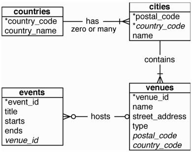
图2-4 鱼尾纹实体关系图（ERD）
创建events表后，插入以下值（时间戳作为字符串插入，例如，2012-02-15 17:30），两个节日，以及我们不会详加讨论的一个俱乐部。
title | starts | ends | venue_id | event_id
-----------------+---------------------+---------------------+---------+--------
LARP Club | 2012-02-15 17:30:00 | 2012-02-15 19:30:00 | 2 | 1
April Fools Day | 2012-04-01 00:00:00 | 2012-04-01 23:59:00 | | 2
Christmas Day | 2012-12-25 00:00:00 | 2012-12-25 23:59:00 | | 3
我们先来做一个查询，使用内联接返回一个事件的标题和场地名称（INNER JOIN中的INNER并不是必需的，所以这里省略它）。
SELECT e.title, v.name
FROM events e JOIN venues v
ON e.venue_id = v.venue_id;
title | name
-------------+--------------
LARP Club | Voodoo Donuts
只有列值匹配，INNER JOIN才会返回一行。因为不能有空的venues.venue_id，所以两个空events.venue_id没有关联到任何事情。要查询所有的事件，不管它们是否有场地，我们需要一个左外连接（LEFT OUTER JOIN，简写为LEFT JOIN）。
SELECT e.title, v.name
FROM events e LEFT JOIN venues v
ON e.venue_id = v.venue_id;
title | name
------------------+---------------
LARP Club | Voodoo Donuts
April Fools Day |
Christmas Day |
如果你需要反过来，返回所有的场地和匹配的事件，就要用RIGHT JOIN。最后，还有 FULL JOIN，这是LEFT和RIGHT的联合；保证能得到每张表中的所有值，列匹配时就会联接。
PostgreSQL的速度（和任何其他RDBMS一样）源于其高效的数据块管理、尽可能少的磁盘块读取、查询优化等技术。如果从events表选择 title为Christmas Day的行，则需要进行全表扫描，以返回相关的结果。如果没有索引，就必须从磁盘读取每一行，才能知道是否是匹配行。参见图2-5。
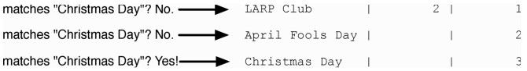
图2-5 全表扫描是找到匹配的数据最慢的方法
索引是一个特殊的数据结构，目的是避免执行查询时进行全表扫描。当运行 CREATE TABLE命令时，你可能注意到这样一条消息：
CREATE TABLE / PRIMARY KEY will create implicit index "events_pkey" \
for table "events"
PostgreSQL 自动在主键上创建索引，以主键的列值为索引的键，索引的值则指向磁盘上的一行，如图2-6所示。采用UNIQUE关键字，是强制在表中一列上创建索引的另一种方式。
可以使用 CREATE INDEX命令明确地添加一个哈希索引，其中每个值必须是唯一的（就像一个哈希或映射）。
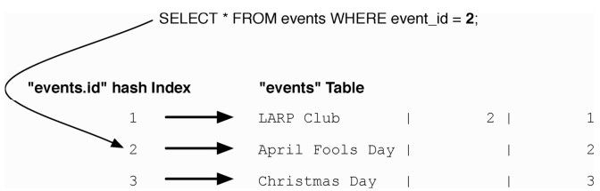
图2-6 利用索引的查询指向精确的行而无需进行表扫描
CREATE INDEX events_title
ON events USING hash (title);
对于操作符为小于/大于/等于这样的匹配查询，我们希望索引比简单的哈希更灵活，如B树索引（见图2-7）。考虑用一个查询来查找4月1日或之后发生的所有事件。
SELECT *
FROM events
WHERE starts >= '2012-04-01';
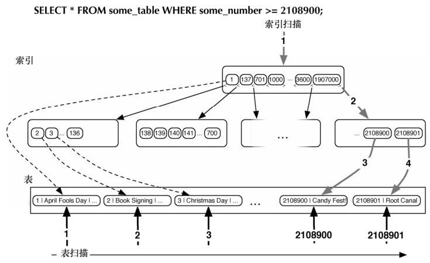
图2-7 B树索引可以匹配范围查询
对于这样的操作，树是一个完美的数据结构。要对starts列创建B树索引，使用下面的命令：
CREATE INDEX events_starts
ON events USING btree (starts);
这样对日期范围的查询将可以避免全表扫描。当扫描数百万或数十亿行时，上述查询的性能差异会很大。
可以用下面的命令，列出数据模式中的所有索引：
book=# \di
值得注意的是，当对列创建一个FOREIGN KEY约束时，PostgreSQL将自动在目标列创建索引。即使你不喜欢使用数据库约束，也会经常发现自己需要在进行联接的列上创建索引，以便加快基于外键的表联接。
我们今天快速介绍了许多内容，涉及很多方面。总结如下：
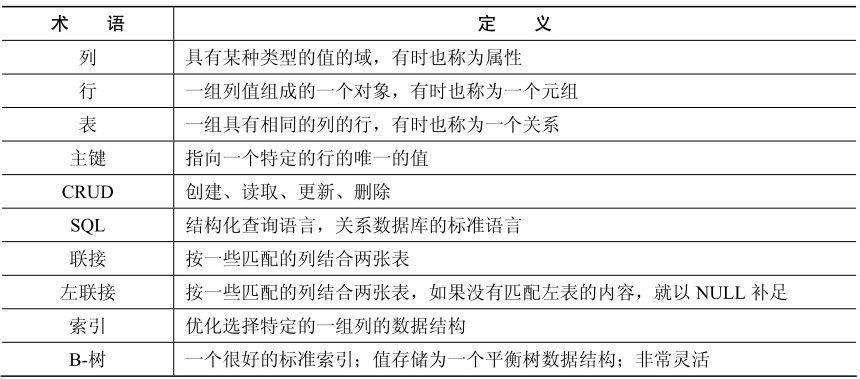
四十多年来，关系数据库已经成为事实上的数据管理策略，我们中的很多人在其发展的中途，开始了自己的职业生涯。因此，我们通过一些基本的SQL查询，初步探讨了关系模型的一些核心概念。明天我们将详细说明这些基本概念。
查找
1．将PostgreSQL官网的常见问题集（FAQ）和官方文档保存为书签。
2．熟悉PSQL的命令行\?和\h的输出信息。
3．在FOREIGN KEY的定义中文档中找到MATCH FULL是什么意思。
完成
1．从pg_class中查询我们创建的所有表（仅我们创建的）。
2．编写一个查询，找到LARP Club事件对应的国家名。
3．修改venues表，增加一个名为active的列，该列为布尔类型，默认值是TRUE。
昨天，我们看到了如何定义数据库表，然后插入数据，更新和删除行，以及读数据。今天我们将更深入探讨PostgreSQL查询数据的各种方法。
我们将看到如何对相似的值归类，在服务器端执行代码，并使用视图（view）和规则（rule）创建自定义接口。在这一天的最后，我们将利用PostgreSQL的一个扩展包翻转表头。
聚合查询按照一些共同的标准将多行的结果分组。它可以简单到统计一张表的行数，或计算某些数值列的平均值。它们是强大的SQL工具，也很有趣。
我们来尝试一些聚合函数，但在此之前我们需要在数据库中有更多的数据。在countries表中加入你自己的国家，在cities表中加入你自己的城市，并以自己的地址作为场地（这里称为My Place），然后添加一些记录到events表中。
下面是一个简单的SQL技巧：在子查询里通过更加可读的title来获得venue_id，而不用直接给出venue_id。如果Moby（白鲸）正在Crystal Ballroom上演，可以这样设置venue_id：
INSERT INTO events (title, starts, ends, venue_id)
VALUES ('Moby', '2012-02-06 21:00', '2012-02-06 23:00', (
SELECT venue_id
FROM venues
WHERE name = 'Crystal Ballroom'
)
);
用以下数据填入 events表（要在PostgreSQL里输入Valentine's Day，可以用双撇号转义，如Heaven"s Gate）。
title | starts | ends | venue
-----------------+---------------------+---------------------+-----------------
Wedding | 2012-02-26 21:00:00 | 2012-02-26 23:00:00 | Voodoo Donuts
Dinner with Mom | 2012-02-26 18:00:00 | 2012-02-26 20:30:00 | My Place
Valentine’s Day | 2012-02-14 00:00:00 | 2012-02-14 23:59:00 |
设置好数据后，我们尝试一些聚合查询。最简单的聚合函数是count()，它的意思不言自明。下面统计所有包含Day关键字的标题（注：%是LIKE搜索中的通配符），可以得到结果为3。
SELECT count(title)
FROM events
WHERE title LIKE '%Day%';
要在Crystal Ballroom发生的所有事件中，获得最早的开始时间和最晚的结束时间，就要使用min()（返回最小值）和max()（返回最大值）。
SELECT min(starts), max(ends)
FROM events INNER JOIN venues
ON events.venue_id = venues.venue_id
WHERE venues.name = 'Crystal Ballroom';
min | max
----------------------+-------------------
2012-02-06 21:00:00 | 2012-02-06 23:00:00
虽然聚合函数很有用，但只用它们是不够的。如果我们想统计每个场地的所有事件，就可以为每个场地ID写出如下语句：
SELECT count(*)FROM events WHERE venue_id = 1;
SELECT count(*)FROM events WHERE venue_id = 2;
SELECT count(*)FROM events WHERE venue_id = 3;
SELECT count(*)FROM events WHERE venue_id = IS NULL;
随着场地的数量增长，这种写法是很让人生厌的（甚至行不通）。因此需要用到GROUP BY命令。
通过GROUP BY可以简单地完成前面查询。使用GROUP BY的时候，你告诉Postgres对行进行归类，然后对这些组执行一些聚合函数（如count()）。
SELECT venue_id, count(*)
FROM events
GROUP BY venue_id;
venue_id | count
---------+------
1| 1
2| 2
3| 1
| 3
结果看起来不错，但是能否用count()函数作为结果的过滤条件？当然可以。GROUP BY项有其自己的过滤关键字：HAVING。HAVING和WHERE子句类似，只不过它可以用聚合函数作为过滤条件（而WHERE不能）。下面的查询找出最热门的场地，它们有两个或更多事件：
SELECT venue_id,count(*)
FROM events
GROUP BY venue_id
H AVING count(*) >= 2 AND venue_id IS NOT NULL;
venue_id | count
---------+------
2 | 2
也可以不带任何聚合函数使用 GROUP BY。如果在一列上用 SELECT...FROM... GROUP BY查询，就会得到所有不重复的值。
SELECT venue_id FROM events GROUP BY venue_id;
这种分组归类非常常见，所以SQL有一个更为简单的命令，即DISTINCT关键词。
SELECT DISTINCT venue_id FROM events;
这两个查询的结果是相同的。
如果你曾经在生产系统中使用过关系数据库，你应该会熟悉聚合查询。聚合查询是一种常见的SQL元素，但窗口函数却不那么常见（PostgreSQL是少数几个实现了窗口函数的开源数据库之一。）
窗口函数与GROUP BY查询是类似的，它们允许你对多行执行聚合函数。所不同的是，窗口函数允许使用内置的聚合函数，而不要求将每个字段分组成单行。
如果试图不对title列分组，却要在结果显示这个字段，将会报错。
SELECT title, venue_id, count(*)
FROM events
GROUP BY venue_id;
ERROR: column "events.title" must appear in the GROUP BY clause or \
be used in an aggregate function
要按 venue_id 对行计数，但是对于一个 venue_id 可能有两个不同的活动 LARP Club和Wedding Postgres不知道要显示哪个活动名。
虽然GROUP BY子句为每个匹配的组返回一个记录，而窗口函数却可以为每行返回一个不同的记录，图2-8描述了这种关系。让我们来看一个例子，这正是窗口函数所能有效解决的场景。
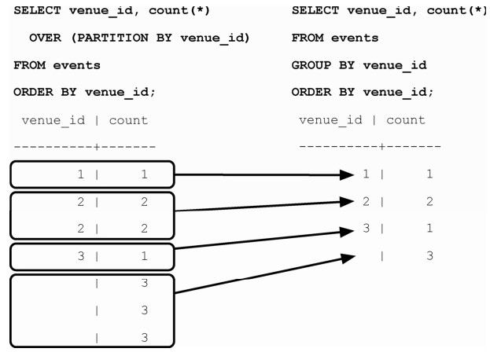
图2-8 窗口函数的结果不折叠每个组的结果
窗口函数返回所有匹配的记录，并复制所有聚合函数的结果：
SELECT title, count(*) OVER (PARTITION BY venue_id) FROM events;
我们倾向于认为PARTITION BY和GROUP BY类似，但它不会在SELECT属性列表之后，再对结果分组（从而将结果合并成较少的行），而是像其他所有字段一样返回分组的值（根据分组变量进行计算，但其他方面就是另一个属性）。或者按SQL的表达方式，它超越（OVER）结果集的分区（PARTITION），返回聚合函数的结果。
事务保障了关系数据库的一致性。事务的准则是，要么全部成功，要么全部失败。事务确保一组命令中的每一条命令都执行。如果过程中间发生了任何失败，所有的命令将回滚，就像它们从未发生过一样。
PostgreSQL的事务遵循ACID，它代表原子性（Atomic，所有的操作都成功或都没有做），一致性（Consistent，数据将始终处于完整的状态，没有不一致的状态），隔离性（Isolated，事务互相之间不干扰），以及持久性（Durable，即使在服务器崩溃以后，提交的事务都是安全的）。我们应该注意，ACID中的一致性不同于CAP中的一致性（附录B介绍了CAP理论）。
可以将任何事务的命令置于BEGIN TRANSACTION块内。为了验证原子性，将使用ROLLBACK命令终止事务。
BEGIN TRANSACTION;
DELETE FROM events;
ROLLBACK;
SELECT * FROM events;
event表里的所有的活动依然存在。如果要修改两个表，并希望它们保持同步，事务就很有用。最典型的例子是一个银行借记/贷记系统，其中钱从一个账户转移到另一个账户：
BEGIN TRANSACTION;
UPDATE account SET total=total+5000.0 WHERE account_id=1337;
UPDATE account SET total=total-5000.0 WHERE account_id=45887;
END;
在MySQL中的GROUP BY
在MySQL中，如果你试图SELECT一些没有在GROUP BY中限定的列，你可能会吃惊地看到，它有结果。这让我们开始怀疑窗口函数的必要性。但更细致地检查MySQL返回的数据之后，我们发现它返回的只是一些随机的数据行和计数，并非所有相关的结果。一般来说，这是没有用的（并且可能相当危险）。
不可避免的事务
到现在为止，在psql中执行的每条命令都隐式地包裹在事务中。如果你执行一条命令，如DELETE FROM account WHERE total < 20;，并且数据库在删除的中途崩溃，你不会被迫接受半张表。当你重新启动数据库服务器时，该命令将回滚。
如果在两次更新之间发生意外，这家银行就会损失5000美元。但是，如果操作放在一个事务块中，即使服务器爆炸了，最初的更新也会被回滚。
厂商锁定是什么
在关系数据库的全盛时期，厂商锁定是技术方面的瑞士军刀。可以在数据库中存储几乎任何内容，甚至用它们对整个项目编程（例如，Microsoft Access）。少数提供这个软件的公司鼓励用户使用它们专有的差异，然后利用这种公司依赖性，收取巨额的许可证和咨询费。这就是可怕的厂商锁定，在20世纪90年代和21世纪初，新的编程方法试图缓解这种情况。
然而，在他们热衷于保持厂商中立时，产生了一些准则，如“数据库中不含逻辑”。这是一种耻辱，因为关系数据库能够胜任多种不同的数据管理方式。厂商锁定并没有消失。本书探讨的许多动作与具体实现高度相关。但是，先要知道如何充分使用数据库，然后再决定是否跳过存储过程这样的工具。
到现在为止，我们看到的每条命令都是声明性的，但有时我们需要运行一些代码。这时你必须做出决定：在客户端执行代码，还是在数据库端执行代码。
存储过程可以通过巨大的架构代价来取得巨大的性能优势。使用存储过程可以避免将数千行数据发送到客户端应用程序，但也让应用程序代码与该数据库绑定，因此，不应该轻易决定使用存储过程。
先把上面的警告放在一边，来创建一个过程（或FUNCTION），它简化了向event表插入记录的工作，无需venue_id，就可以插入在某个场地举行的活动。如果场地不存在，会先创建它，并在新的事件中引用它。此外，为了用户友好，函数会返回一个布尔值，表明添加新场地是否成功。
postgres/add_event.sql
CREATE OR REPLACE FUNCTION add_event(i_title text, i_starts timestamp,
i_ends timestamp, venue text, postal varchar(9), country char(2) )
RETURNS boolean AS $$
DECLARE
did_insert boolean := false;
found_count integer;
the_venue_id integer;
BEGIN
SELECT venue_id INTO the_venue_id
FROM venues v
WHERE v.postal_code=postal AND v.country_code=country AND v.name ILIKE venue
LIMIT 1;
IF the_venue_id IS NULL THEN
选择执行数据库代码
本书将多次探讨这个主题，这是第一次：代码属于应用程序还是属于数据库？这是一个困难的决定，对每个应用程序，你都会有不同的答案。
好处是性能常常会提高一个数量级。例如，你可能有一个复杂的、应用程序相关的计算，要求自定义代码。如果计算涉及许多行数据，存储过程让你不必传输数千行数据，只要传一个结果。这样做的代价是割裂应用程序，你的代码和测试将跨越两种不同的编程范式（客户端和服务器）。
INSERT INTO venues (name, postal_code, country_code)
VALUES (venue, postal, country)
RETURNING venue_id INTO the_venue_id;
did_insert := true;
END IF;
-- Note: not an"error",as in some programming languages
RAISE NOTICE 'Venue found %', the_venue_id;
INSERT INTO events (i_title, i_starts, i_ends, i_venue_id)
VALUES (title, starts, ends, the_venue_id);
RETURN did_insert;
END;
$$ LANGUAGE plpgsql;
如果你不喜欢用键盘输入所有的代码，通过以下命令行参数，可以将这个外部文件导入当前数据库。
book=# \i add_event.sql
因为这是第一次使用场地Run’s House，下面的操作应该返回 t（成功）。它只有一次往返，这避免了客户端SQL命令到数据库的两次往返（一次查询，然后是一次插入）。
SELECT add_event('House Party', '2012-05-03 23:00',
'2012-05-04 02:00', 'Run''s House', '97205', 'us');
在我们所写的存储过程中使用的语言是PL/pgSQL（即Procedural Language/PostgreSQL）。全面介绍其细节超出了本书的范围，但是你可以在PostgreSQL的官方在线文档1中看到更多有关内容。
1 http://www.PostgreSQL.org/docs/9.0/static/plpgsql.html
除了PL/pgSQL，PostgreSQL还支持三种更核心的语言编写程序：Tcl、Perl和Python。社区还开发了Ruby、Java、PHP、Scheme，以及官方文档列出的十多种语言的扩展模块。试试这个shell命令：
$ createlang book –-list
它会列出在你的数据库中安装的语言，createlang命令也可以用来添加新的语言。可以在线找到该命令。1
1 http://www.PostgreSQL.org/docs/9.0/static/app-createlang.html
当插入或更新这样的事件发生时，触发器会自动调用存储过程。它们允许数据库在数据变化的时候，强制执行一些必要的操作。
下面创建一个新的PL/pgSQL函数，当活动信息event更新的时候，都会记录相应的日志（我们想要确保没有人改变事件之后又不承认）。首先，创建一个logs表以记录活动信息的变化，这里没有必要使用主键，因为这只是日志。
CREATE TABLE logs (
event_id integer,
old_title varchar(255),
old_starts timestamp,
old_ends timestamp,
logged_at timestamp DEFAULT current_timestamp
);
接下来，创建一个函数，将更新前的数据写入日志。OLD变量代表更新前的行（我们将很快就会看到 NEW 代表新输入的行的值）。在返回之前，在屏幕上输出一条带event_id的信息。
postgres/log_event.sql
CREATE OR REPLACE FUNCTION log_event() RETURNS trigger AS $$
DECLARE
BEGIN
INSERT INTO logs (event_id, old_title, old_starts, old_ends)
VALUES (OLD.event_id, OLD.title, OLD.starts, OLD.ends);
RAISE NOTICE 'Someone just changed event #%', OLD.event_id;
RETURN NEW;
END;
$$ LANGUAGE plpgsql;
最后，创建触发器，可以在任意行更新后记录相应变更。
CREATE TRIGGER log_events
AFTER UPDATE ON events
FOR EACH ROW EXECUTE PROCEDURE log_event();
现在，我们在Run’s House的聚会将比计划的提前结束。下面更新这个事件。
UPDATE events
SET ends='2012-05-04 01:00:00'
WHERE title='House Party';
NOTICE: Someone just changed event #9
而且原来的结束时间记入了日志。
SELECT event_id, old_title, old_ends, logged_at
FROM logs;
event_id | old_title | old_ends | logged_at
---------+------------+---------------------+-----------------------
9 | House Party | 2012-05-04 02:00:00 | 2011-02-26 15:50:31.939
触发器还可以在更新之前以及插入之前或之后创建。1
1 http://www.PostgreSQL.org/docs/9.0/static/triggers.htmla
如果复杂查询的结果用起来就像其他任何表一样，那岂不是太棒了？这就是VIEW的用途。与存储过程不同，它们不是执行的函数，而是查询的别名。
在我们的数据库中，所有节日都包含单词Day，并且没有场地信息。
postgres/holiday_view_1.sql
CREATE VIEW holidays AS
SELECT event_id AS holiday_id, title AS name, starts AS date
FROM events
WHERE title LIKE '%Day%' AND venue_id IS NULL;
可以看到，创建视图很简单，只要在查询前面加上“CREATE VIEW some_view_name AS”。
现在，可以像查询任何其他表一样查询holidays，其后面是普通不过的events表。作为证明，向events添加2012-02-14的情人节（Valentine’s Day），并查询节日视图holidays。
SELECT name, to_char(date, 'Month DD, YYYY') AS date
FROM holidays
WHERE date <= '2012-04-01';
name | date
------------------+-------------------
April Fools Day | April 01, 2012
Valentine’s Day | February 14,2012
视图是强大的工具，它可以以一种简单的方式访问复杂查询的数据。下面的查询可能非常复杂，但是你看到的全部只是一张表。
如果你想在视图中添加一个新列，那么，你只能修改底层的表。修改events表，使它有一组相关的颜色。
ALTER TABLE events
ADD colors text ARRAY;
因为holidays有与它们相关联的颜色组，那我们就修改视图的查询，以包含colors数组。
CREATE OR REPLACE VIEW holidays AS
SELECT event_id AS holiday_id, title AS name, starts AS date, colors
FROM events
WHERE title LIKE '%Day%' AND venue_id IS NULL;
现在要为选定的节日设置一个颜色字符串数组，但遗憾的是，我们不能直接更新视图。
UPDATE holidays SET colors = '{"red", "green"}' where name = 'Christmas Day';
ERROR: cannot update a view
HINT: You need an unconditional ON UPDATE DO INSTEAD rule.
看起来需要一条规则。
规则是对如何修改解析过的查询树的描述。Postgres每次运行一条SQL语句，它将语句解析成查询树（一般称为抽象语法树）。
树的枝和叶是运算符和值，在执行前，树会被遍历、删减，并以其他方式修改。这棵树可以被Postgres规则重写，然后发送到查询规划器（它也以某种方式重写这棵树，以达到优化性能运行效果），最后会把最终的命令发送到执行器。参见图2-9。
需要找出的是，诸如holidays这样的视图其实就是一条规则。
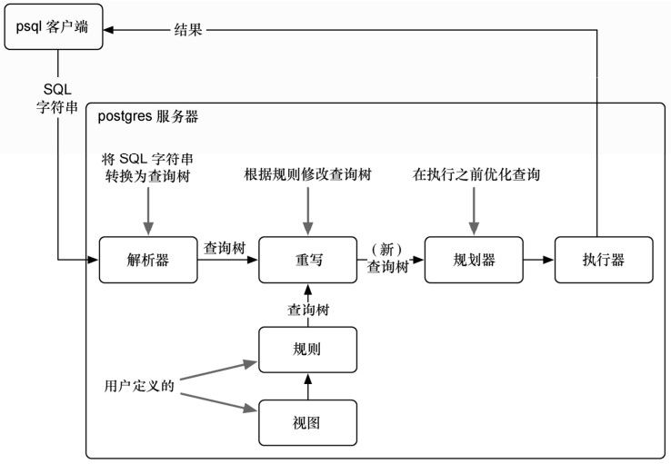
图2-9 在PostgreSQL中SQL如何执行
用EXPLAIN命令看一看holidays视图的执行计划，我们可以证明这一点（注意， Filter是WHERE子句，Output为列的列表）。
EXPLAIN VERBOSE
SELECT *
FROM holidays;
QUERY PLAN
--------------------------------------------------------------------------------
Seq Scan on public.events (cost=0.00..1.04 rows=1 width=57)
Output: events.event_id, events.title, events.starts, events.colors
Filter: ((events.venue_id IS NULL)AND ((events.title)::text～～ '%Day%'::text))
如果对定义 holidays视图的查询语句执行 EXPLAIN VERBOSE，并和上述结果比较，我们会发现它们在功能上是等价的。
EXPLAIN VERBOSE
SELECT event_id AS holiday_id,
title AS name, starts AS date, colors
FROM events
WHERE title LIKE '%Day%' AND venue_id IS NULL;
QUERY PLAN
--------------------------------------------------------------------------------
Seq Scan on public.events (cost=0.00..1.04 rows=1 width=57)
Output: event_id, title, starts, colors
Filter: ((events.venue_id IS NULL)AND ((events.title)::text～～ '%Day%'::text))
所以，为了允许更新holidays视图，需要定义一条规则，告诉PostgreSQL在UPDATE的时候做什么操作。规则将捕捉对holidays视图的更新，从NEW与OLD的伪关系取值，并在events上执行更新。NEW看作是包含即将更新的值的表，而OLD则是包含查询的值。
postgres/create_rule.sql
CREATE RULE update_holidays AS ON UPDATE TO holidays DO INSTEAD
UPDATE events
SET title = NEW.name,
starts = NEW.date,
colors = NEW.colors
WHERE title = OLD.name;
有了这条规则，现在可以直接更新holidays。
UPDATE holidays SET colors = '{"red","green"}' where name = 'Christmas Day';
接下来将 2013-01-01的New Years Day插入holidays中。正如我们所料，这也需要一条规则。没有问题。
CREATE RULE insert_holidays AS ON INSERT TO holidays DO INSTEAD
INSERT INTO ...
我们即将讨论其他内容，但是如果你想多练习RULE的用法，可以尝试添加DELETE RULE。
作为今天最后的练习，下面将要建立一个事件月历，对一年中各月发生的事件计数。这种操作通常由一个数据透视表（pivot table）完成。这些构造以另外某种输出为“中心”，对数据分组。在例子中，中心是月份列表。我们将使用crosstab()函数创建数据透视表。
首先设计一个查询，来统计每年中每月里的事件数量。PostgreSQL提供了extract()函数，它返回日期或时间戳的某些部分，我们利用它来对事件进行归类。
SELECT extract(year from starts) as year,
extract(month from starts) as month, count(*)
FROM events
GROUP BY year, month;
为了使用 crosstab()，查询必须返回三列：rowid、category 和 value。我们将把year作为一个ID，这意味着其他域是类别（月）和值（计数）。
crosstab()函数需要另一组值代表月。根据这组值，该函数知道需要多少列。这组值将成为列（透视所依据的表）。现在，我们创建一张表，存储临时的数字列表。
CREATE TEMPORARY TABLE month_count(month INT);
INSERT INTO month_count VALUES (1),(2),(3),(4),(5),(6),(7),(8),(9),(10),(11),(12);
现在，我们准备好以两个查询来调用crosstab()。
SELECT * FROM crosstab(
'SELECT extract(year from starts) as year,
extract(month from starts) as month, count(*)
FROM events
GROUP BY year, month',
'SELECT * FROM month_count'
);
ERROR: a column definition list is required for functions returning "record"
糟糕，发生错误了。
它可能看起来神秘，其实它是在说，该函数返回一组记录（行），但不知道如何标记它们。事实上，它甚至不知道它们是什么样的数据类型。
请记住，数据透视表使用月份作为类别，但这些月份只是整数。所以，这样定义它们：
SELECT * FROM crosstab(
'SELECT extract(year from starts) as year,
extract(month from starts) as month, count(*)
FROM events
GROUP BY year, month',
'SELECT * FROM month_count'
) AS (
year int,
jan int, feb int, mar int, apr int, may int, jun int,
jul int, aug int, sep int, oct int, nov int, dec int
) ORDER BY YEAR;
有一个year列（这是行ID）和12个代表月份的列。
year | jan | feb | mar | apr | may | jun | jul | aug | sep | oct | nov | dec
-----+-----+-----+-----+-----+-----+-----+-----+-----+-----+-----+-----+-----
2012 | | 5 | | 1 | 1 | | | | | | | 1 |
2013 | | 1 | | | | | | |
为了要看到下一年的事件计数，在另一年里增加更多的事件。再次运行crosstab()函数，再看看你的大作。
今天完成了PostgreSQL的基础内容。我们开始看到，PostgreSQL不仅仅是一个存储和查询简单数据类型的服务器；它还是一个数据管理引擎，可以重新格式化输出数据、存储各种数据类型（如数组）、执行逻辑，并提供足够的能力来重写传入的查询。
第2天作业
求索
1．在PostgreSQL文档中找到聚合函数列表。
2．找到一个与PostgreSQL进行交互的GUI程序，例如Navicat。
实践
1．创建一条规则，把对场地的删除，改为将active标志（在第1天作业中创建的）设置为FALSE。
2．临时表不是实现事件月历数据透视表的最好方式。generate_series(a,b)函数返回一组，从a到b的记录。用它来替换month_count表的SELECT。
3．建立一个数据透视表，显示在单个月份中的每一天，像一个标准的单月日历那样，其中这个月的每个星期是一行，每一天的名字作为表头（七天，从周日开始，到周六结束）。每天应包含该日期的事件数量，如果没有事件发生，该天应保持空白。
第 3 天我们将要学习如何使用多个工具，建立一个电影查询系统。首先，使用PostgreSQL自带的多种模糊字串匹配功能，搜索演员/电影的名字。然后，创建一个根据我们喜欢电影的风格进行推荐的系统，以学习cube扩展模块。所有这些都是PostgreSQL特有的扩展模块，不是SQL标准定义的内容。
在设计关系数据库的数据模式时，通常会从实体关系图开始。对将要创建的管理电影、电影风格和演员的个人电影推荐系统，建立如图2-10的实体模型。
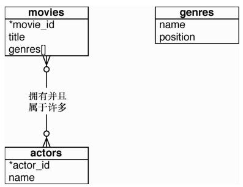
图2-10 电影推荐系统
提醒一下，在第1天，我们安装了几个扩展模块。今天我们会全部用到。我们需要用到的扩展模块列表如下：tablefunc、dict_xsyn、fuzzystrmatch、pg_trgm和cube。
首先创建数据库。一般来说，最好在外键上创建索引以加快反向查找（如通过演员信息，反向查找到其参演的所有电影）。除此之外也需要在 movies_actors 这样的联接表上设置一个UNIQUE约束，以避免重复的联接值。
postgres/create_movies.sql
CREATE TABLE genres (
name text UNIQUE,
position integer
);
CREATE TABLE movies (
movie_id SERIAL PRIMARY KEY,
title text,
genre cube
);
CREATE TABLE actors (
actor_id SERIAL PRIMARY KEY,
name text
);
CREATE TABLE movies_actors (
movie_id integer REFERENCES movies NOT NULL,
actor_id integer REFERENCES actors NOT NULL,
UNIQUE (movie_id, actor_id)
);
CREATE INDEX movies_actors_movie_id ON movies_actors (movie_id);
CREATE INDEX movies_actors_actor_id ON movies_actors (actor_id);
CREATE INDEX movies_genres_cube ON movies USING gist (genre);
你也可以下载本书配套的movies_data.sql脚本，并将其导入到数据库来创建相关的表。关于genre cube的任何问题，将在本节稍后讨论。
系统能够支持文本检索功能，就意味系统要面对不确切的输入。你必须能够接受“Brid of Frankstein”这样的错别字。有时候，用户可能不记得“J. Roberts”的全名。在另一些时候，我们只是不知道如何拼写“Benn Aflek”。我们会看到通过一些PostgreSQL扩展包，可以使全文检索变得方便。值得注意的是，随着讨论的深入，这种字符串匹配的功能模糊了关系查询和Lucene1这样的搜索框架之间的差异。虽然有些人可能会觉得全文搜索这样的功能属于应用程序代码，但将这些扩展模块放到存放数据的数据库中，可以带来性能和管理上的好处。
1 http://lucene.apache.org/
PostgreSQL有很多方法进行文本匹配，但两大默认方法是LIKE和正则表达式。
1．LIKE和ILIKE
LIKE 和 ILIKE（不区分大小写的 LIKE）是文本搜索最简单的形式。它们在关系数据库中是相当普遍的。LIKE比较列值和给定的模式字符串。%和_字符是通配符。%表示匹配任意数量的任何字符，而_表示只匹配一个字符。
SELECT title FROM movies WHERE title ILIKE 'stardust%';
title
-------------------
Stardust
Stardust Memories
有个小技巧，如果想确保子串stardust不在字符串的末尾，可以使用下划线（_）字符。
SELECT title FROM movies WHERE title ILIKE 'stardust_%';
title
-------------------
Stardust
Stardust Memories
虽然在简单的场景下，这个功能非常有用，但是LIKE只能用于简单的通配符。
2．正则表达式
更强大的字符串匹配语法是正则表达式（regex）。因为许多数据库都支持它们正则表达式在本书中常常出现。正则表达式涉及的内容很广且复杂甚至还有一些书专门介绍如何编写强大的表达式。所以本书很难对这方面内容深入讨论。PostgreSQL（基本上）采用POSIX风格的正则表达式。
在Postgres里，正则表达式的匹配字串由～运算符开始，还可以带有可选的!（意思是不匹配）和*（意思是不区分大小写）。因此，要统计所有不以 the 开始的电影（不区分大小写），可以用下面的查询。匹配字符串内的字符是正则表达式。.
SELECT COUNT(*)FROM movies WHERE title !～* '^the.*';
可以为匹配前面查询的模式创建字符串索引，方法是创建一个 text_pattern_ops运算符类索引，只要值以小写形式索引。
CREATE INDEX movies_title_pattern ON movies (lower(title) text_pattern_ops);
因为标题是文本类型，所以使用了 text_pattern_ops 类型的索引。如果需要对varchar、char或name类型的字串进行索引，可以使用下面的类型：varchar_pattern_ops、bpchar_pattern_ops和name_pattern_ops。
levenshtein 是一个字符串比较算法，它能够计算一个字符串需要经过多少步才能变成另一个字符串，从而可以比较两个字符串的相似程度。变换过程中，每个被替换的、缺失的或多出来的字符算作一个步骤，所有步骤的和算作是两个字符串的距离。在PostgreSQL中，levenshtein()函数由fuzzystrmatch扩展模块提供。
假设有字符串bat和字符串fads。
SELECT levenshtein('bat', 'fads');
因为fads与字符串bat相比，替换了两个字母（b=>f，t=>d），添加了一个字母（+s），每变换一次距离就会递增，所以它们间的levenshtein距离是3。我们可以看到，每变换一步，字串的距离会交短，通过变换，距离最后会逐步减少到零（即两个字符串变成一样）。
SELECT levenshtein('bat', 'fad') fad,
levenshtein('bat', 'fat') fat,
levenshtein('bat', 'bat') bat;
fad | fat | bat
-----+-----+-----
2 | 1 | 0
大小写的变化也算是一个步骤，所以比较的时候最好把所有字符串转为相同的大小写。
SELECT movie_id, title FROM movies
WHERE levenshtein(lower(title), lower('a hard day nght')) <= 3;
movie_id | title
----------+-------------------
245 | A Hard Day’s Night
这确保只有细微的差别的字符串不会算成有很长的距离。
三连词（trigram）是从一个字符串中取出包含三个连续字符的词。pg_trgm扩展模块可以将一个字符串分解为尽可能多的三连词。
SELECT show_trgm('Avatar');
show_trgm
-------------------------------------
{" a"," av","ar ",ata,ava,tar,vat}
找到一个匹配的字符串的过程可以简化，只需要统计匹配的三字母结构个数。匹配数最多的字符串就是最相似的。对于容忍小的拼写错误、甚至漏掉不重要的单词的搜索，这种查询方法是非常有用的。字符串越长，三字词就越多，则匹配的可能性就越大。它们很适合长度相近的电影片名这样的查询。
首先，将对电影的名字创建三连词索引（使用通用索引搜索树[Generalized Index Search Tree，GIST]，这是由PostgreSQL引擎提供的一个通用索引API。
CREATE INDEX movies_title_trigram ON movies
USING gist (title gist_trgm_ops);
现在，即便在查询时带一点拼写错误，仍可得到不错的结果。
SELECT title
FROM movies
WHERE title % 'Avatre';
title
---------
Avatar
对于接受用户输入的字符匹配查询，三连词无需考虑复杂的通配符，是最好的选择。
接下来，我们想让用户基于单词匹配进行全文检索，其中输入的单词可能会是复数。有时候，用户要通过几个记得的词搜索电影标题，Postgres可以支持简单的自然语言查询处理。
1．TSVector和TSQuery
我们来查找名字中包含单词night和day的电影，这种查找是全文检索的强项，我们可以用@@这个全文查询运算符进行文本搜索。
SELECT title
FROM movies
WHERE title @@ 'night & day';
title
-------------------------------
A Hard Day’s Night
Six Days Seven Nights
Long Day’s Journey Into Night
尽管返回结果的单词Day是所有格形式，而且这两个词的顺序颠倒了，该查询返回了像《A Hard Day’s Night》这样的电影名。@@运算符将电影名字段转换成tsvector结构体，并将查询转换成一个tsquery结构体。
tsvector是一种数据类型，它将字符串分解成单词的数组（或向量），再在输入的查询字串里搜索这些单词；而tsquery则是基于某种语言的查询，如英语或法语。每种语言对应一个相应的字典（我们会在后面几段看到更多相关内容）。如果系统语言设置为英语，前一个查询相当于下面的语句：
SELECT title
FROM movies
WHERE to_tsvector(title) @@ to_tsquery('english', 'night & day');
你可以看一看，通过在字符串上彻底运行转换函数，向量和查询如何将值分开。
SELECT to_tsvector('A Hard Day''s Night'), to_tsquery('english', 'night & day');
to_tsvector | to_tsquery
----------------------------+-----------------
'day':3 'hard':2 'night':5 | 'night' & 'day'
tsvector上的单词称为词素（lexeme），同时它还包含该词原来短语中的位置。
你可能已经注意到，《A Hard Day’s Night》的tsvector不包含单词 a，而且，所有像a这样的简单英文单词会在查询的时候被忽略。
SELECT *
FROM movies
WHERE title @@ to_tsquery('english', 'a');
NOTICE: text-search query contains only stop words or doesn’t \
contain lexemes, ignored
像 a这样的常用词称为无用词（stop word），一般在执行查询时会被忽略。解析器会使用英语词典对字符串整型，将其转换成有意义的英语单元。可以在终端屏幕里查看tsearch_data目录下的英语无用词。
cat `pg_config --sharedir`/tsearch_data/english.stop
我们也可以从列表中删除a，或者用其他字典（如simple字典），这个字典会把字符串分解成由非单词字符间隔开的词，并把它们转为小写。比较这两个向量：
SELECT to_tsvector('english', 'A Hard Day''s Night');
to_tsvector
----------------------------
'day':3 'hard':2 'night':5
SELECT to_tsvector('simple', 'A Hard Day''s Night');
to_tsvector
----------------------------------------
'a':1 'day':3 'hard':2 'night':5 's':4
使用simple字典可以查询包含词素a的任何电影。
2．其他语言
因为Postgres在这里进行着某种自然语言处理，所以只有用不同的语言配置对应不同的语言，才有可能进行这样的处理。下面的命令可以查看所有已安装的语言配置：
book=# \dF
Postgres利用字典生成tsvector词素，除了利用无用词，还用到其他前面没有提到的称为解析器（parser）和模板（template）的分词规则，可以通过下面的命令查看系统的规则列表：
book=# \dFd
还可以直接调用 ts_lexize()函数来对任何字典进行测试。下面的例子中，我们找到字符串Day’s的英语词干。
SELECT ts_lexize('english_stem', 'Day''s');
ts_lexize
-----------
{day}
最后，前面的全文检索也适用于其他语言。如果你安装了德语字典，可以试试这个：
SELECT to_tsvector('german', 'was machst du gerade?');
to_tsvector
--------------------
'gerad':4 'mach':2
因为was（what）和du（you）很常见，所以它们在德语字典中标记为无用词，而machst （doing）和gerade（now）被整型了。
3．对词素索引
全文检索虽然功能强大。但是，如果不为相应的表建立索引，检索的速度会很慢。EXPLAIN命令是一个功能强大的工具，通过它可以查看数据库内部对查询生成什么样的计划树。
EXPLAIN
SELECT *
FROM movies
WHERE title @@ 'night & day';
QUERY PLAN
---------------------------------------------------------------------------
Seq Scan on movies (cost=10000000000.00..10000000001.12 rows=1 width=68)
Filter: (title @@ 'night & day'::text)
请注意Seq Scan on movies这一行。这在查询中基本上不是好兆头，因为它意味着读取表的每一行。因此，需要建立正确的索引。
我们将使用通用反向索引GIN（Generalized Inverted iNdex，GIN），对我们要查询的词素创建索引，GIN和GIST类似，也是索引的API。如果你使用过像Lucene或Sphinx这样的搜索引擎，你会对反向索引（inverted index）比较熟悉。它是一种常见的用于对全文检索进行索引的数据结构。
CREATE INDEX movies_title_searchable ON movies
USING gin(to_tsvector('english', title));
现在有了索引，再搜索一次。
EXPLAIN
SELECT *
FROM movies
WHERE title @@ 'night & day';
QUERY PLAN
---------------------------------------------------------------------------
Seq Scan on movies (cost=10000000000.00..10000000001.12 rows=1 width=68)
Filter: (title @@ 'night & day'::text)
看到了什么？什么也没变。索引是存在的，但是Postgres没有用它。这是因为GIN索引需要使用 english 的全文检索配置构造其 tsvectors 向量，但我们在查询里面没有指明该向量。现在我们需要在查询的WHERE子句中指定它。
EXPLAIN
SELECT *
FROM movies
WHERE to_tsvector('english',title) @@ 'night & day';
QUERY PLAN
--------------------------------------------------------------------------------
Bitmap Heap Scan on movies (cost=4.26..8.28 rows=1 width=68)
Recheck Cond: (to_tsvector('english'::regconfig, title) @@ '''day'''::tsquery)
-> Bitmap Index Scan on movies_title_searchable (cost=0.00..4.26 rows=1 width=0)
Index Cond: (to_tsvector('english'::regconfig, title) @@ '''day'''::tsquery)
EXPLAIN很重要，它可以确保按你希望方式使用索引。否则，索引只是无谓的开销。
4．发音码metaphone
我们朝着匹配不太具体的输入迈出了一小步。LIKE 和正则表达式需要创建匹配模式，根据模式指定要求的格式准确匹配相应的字符串。levenshtein 距离可以匹配有微小拼写错误的字符串，但要求必须是非常相似的字符串。要找到合理范围内的拼写错误的匹配，三连词是很好的选择。最后，全文检索允许有自然语言的灵活性，因为它可以忽略a和the这样不重要的单词，并能处理复数形式。有时候，我们只是不知道如何正确拼写单词，但是我们知道它们的读音。
我们喜爱布鲁斯·威利斯（Bruce Willis），很想知道他参演什么样的电影。遗憾的是，我们忘了如何拼写他的名字，所以我们只能尽可能地把它拼写出来。
SELECT *
FROM actors
WHERE name = 'Broos Wils';
即使三连词在这里也用处不大（使用%而不是=）。
SELECT *
FROM actors
WHERE name % 'Broos Wils';
这里可以用（metaphone），它们是用来生成代表单词发音的发音码的算法。你可以指定输出的发音码中有多少个字符，例如，Aaron Eckhart的7个字符的发音码是ARNKHRT。
为了找到名字的发音像Broos Wils的人参演的所有电影，可以在查询中使用metaphone输出的发音码。请注意，NATURAL JOIN是 INNER JOIN的一种，自动以列名相同的列进行联接（例如，movies.actor_id= movies_actors.actor_id）。
SELECT title
FROM movies NATURAL JOIN movies_actors NATURAL JOIN actors
WHERE metaphone(name, 6) = metaphone('Broos Wils', 6);
title
-----------------------------
The Fifth Element
Twelve Monkeys
Armageddon
Die Hard
Pulp Fiction
The Sixth Sense
:
如果你看看在线文档，会发现扩展模块fuzzystrmatch还有另外的函数：dmetaphone() （双发音码）、dmetaphone_alt()（替代发音）和soundex()（19世纪80年代的美国人口普查创立的、用来对比常见的美国人姓氏的古老算法）。
可以输出各函数的结果，来详细研究这些函数结果的表示方式。
SELECT name, dmetaphone(name), dmetaphone_alt(name),
metaphone(name, 8), soundex(name)
FROM actors;
name | dmetaphone | dmetaphone_alt | metaphone | soundex
-----------------+------------+----------------+------------+--------
50 Cent | SNT | SNT | SNT | C530
Aaron Eckhart | ARNK | ARNK | ARNKHRT | A652
Agatha Hurle | AK0R | AKTR | AK0HRL | A236
:
没有哪个函数是最好的，根据你的数据集做出最优化选择。
有了这些字符串检索的方法，就可以用有趣的方式组合着来用。
发音码最灵活的方面之一是其输出就是字符串。这让你能与其他字符串匹配方法混合着使用。例如，可以对metaphone()输出结果使用三连词运算符，并按最短的Levenshtein距离排序结果。这意味着“找到发音像Robin Williams的名字，并按顺序排列。”
SELECT * FROM actors
WHERE metaphone(name,8) % metaphone('Robin Williams',8)
ORDER BY levenshtein(lower('Robin Williams'), lower(name));
actor_id | name
----------+-----------------
4093 | Robin Williams
2442 | John Williams
4479 | Steven Williams
4090 | Robin Shou
需要注意的是，结果并不完美。Robin Williams排到了第三位。滥用这种灵活性可能产生其他有趣的结果，所以要小心。
SELECT * FROM actors WHERE dmetaphone(name) % dmetaphone('Ron');
actor_id | name
----------+-------------
3911 | Renji Ishibashi
3913 | Renée Zellweger
:
组合方式非常多，只受限于你的实验。
最后介绍的扩展模块是 cube。用 cube 数据类型，将一部电影的风格类型映射到一个多维向量。然后在超级立方体内，通过一些方法，查询与给定的点最接近的点，从而给出和当前电影风格类似的所有电影的列表。
你可能注意到，在本节开始时，我们创建了一个名为genres的列，其数据类型是cube，其值是18维空间中的一个点，每个维度代表一种风格。为什么用n维空间中的点代表电影风格？因为电影分类不是一门精确的科学，很多电影不是100%的喜剧或悲剧，它们介乎其中。
在系统中，基于某种电影属于某种风格的强度，对电影进行评分，分数从（完全任意的数字）0到10，0表示完全属于该风格，10表示最强。
《星球大战》（Star Wars）的风格向量是(0，7，0，0，0，0，0，0，0，7，0，0，0， 0 ， 10 ， 0 ， 0 ， 0)。genres 向量表里的值是向量中每个维度的位置。可以用每个genres.position提取cube_ur_coord(vector，dimension)，解释它的风格值。为清楚起见，我们过滤掉得分0的风格。
SELECT name,
cube_ur_coord('(0,7,0,0,0,0,0,0,0,7,0,0,0,0,10,0,0,0)', position) as score
FROM genres g
WHERE cube_ur_coord('(0,7,0,0,0,0,0,0,0,7,0,0,0,0,10,0,0,0)', position) > 0;
name | score
-------------+-------
Adventure |7
Fantasy |7
SciFi |10
只要找到最近的点，我们可以找到风格相似的电影。要理解为什么这样是可行的，可以看看图 2-11。如果你最喜欢的电影是《动物之家》（Animal House），你可能喜欢的是《四十岁的老处男》（The 40 Year Old Virgin），而不是《俄狄浦斯》（Oedipus），因为它明显缺乏喜剧元素。在二维空间中，可以把寻找相似的匹配简单地转化为最近邻搜索。
还可以推广到更多的维度，代表更多的风格，如2维、3维或18维。其原理是相同的：最近邻匹配就是风格空间中最近点，也就是最接近的风格匹配。
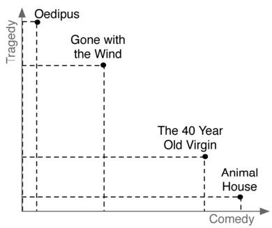
图2-11 二维风格图中的两部电影
风格向量的最近匹配可以通过cube_distance (point1，point2)搜索得到。这里，我们可以找到所有电影到《星球大战》的风格向量的距离，最近的排在前面。
SELECT *,
cube_distance(genre, '(0,7,0,0,0,0,0,0,0,7,0,0,0,0,10,0,0,0)') dist
FROM movies
ORDER BY dist;
前面创建表时，创建了movies_genres_cube立方体索引。然而，即使使用索引，这个查询仍然比较缓慢，因为它需要全表扫描。它计算每一行的距离，然后将它们排序。
与其每一个点都计算距离，不如集中在一个比较可能的有界立方体（ bounding cube），计算里面的点的距离。正如在找5个最近的镇的时候，在州的地图上找要比在世界地图上寻找更快，因为框定一个边界的话，可以减少需要看的点。
使用cube_enlarge(cube，radius，dimensions)建立一个18维的立方体，其边长（半径）大于一个点。我们来看一个更简单的例子，如果围绕点(1，1)建立一个单位二维正方形，正方形的左下角是(0，0)，右上角是(2，2)。
SELECT cube_enlarge('(1,1)',1,2);
cube_enlarge
---------------
(0,0),(2,2)
同样的原则适用于任何维度。我们可以对一个有界的超立方框使用一个特殊的 cube运算符“@>”，意思是包含。
下面这个查询已算出以《星球大战》（Star Wars）的风格代表的点为中心、5单位立方体内包含的所有点的距离。
SELECT title, cube_distance(genre, '(0,7,0,0,0,0,0,0,0,7,0,0,0,0,10,0,0,0)') dist
FROM movies
WHERE cube_enlarge('(0,7,0,0,0,0,0,0,0,7,0,0,0,0,10,0,0,0)'::cube, 5, 18) @> genre
ORDER BY dist;
title | dist
------------------------------------------------+------------------
Star Wars | 0
Star Wars: Episode V - The Empire Strikes Back | 2
Avatar | 5
Explorers | 5.74456264653803
Krull | 6.48074069840786
E.T. The Extra-Terrestrial | 7.61577310586391
可以由电影名得到风格，然后，直接执行针对该风格的计算（把子查询的结果当作一个表，并给其起个别名）。
SELECT m.movie_id, m.title
FROM movies m, (SELECT genre, title FROM movies WHERE title = 'Mad Max') s
WHERE cube_enlarge(s.genre, 5, 18) @> m.genre AND s.title <> m.title
ORDER BY cube_distance(m.genre, s.genre)
LIMIT 10;
movie_id | title
---------+----------------------------
1405 | Cyborg
1391 | Escape from L.A.
1192 | Mad Max Beyond Thunderdome
1189 | Universal Soldier
1222 | Soldier
1362 | Johnny Mnemonic
946 | Alive
418 | Escape from New York
1877 | The Last Starfighter
1445 | The Rocketeer
虽然这种电影的推荐方法并不完美，但它是一个好的开始。我们将在后面的章节，如在MongoDB中的二维地理搜索（参见5.4.3节），看到更多的维度查询。
今天，我们深入体验了PostgreSQL在字符串搜索方面的灵活性，使用了多维搜索的cube包。最重要的是，我们体验了PostgreSQL的一些非标准扩展模块，正是这些扩展让PostgreSQL领先于其他开源RDBMS。还有几十（甚至几百）个扩展可供自由使用，如从地理存储到加密函数、自定义数据类型和语言扩展等。除了SQL核心能力之外，这些扩展模块让PostgreSQL光芒闪耀。
第3天作业
求索
1．从官方在线文档中找到Postgres自带的所有可扩展包。
2．找到网上的POSIX正则表达式的文档（可供后续章节中使用）。
实践
1．创建一个存储过程，可以输入你喜欢的电影或演员的名字，它根据演员曾主演过的或类似风格的电影，返回5个最好的推荐。
2．扩展电影数据库，记录用户的评论并提取关键字（除去英语的忽略字）。对比演员姓氏和相关关键字，尝试找到被谈论最多的演员。
如果你没有接触过太多关系数据库的话，在决定放弃它而采用新类型的数据库之前，我们强烈建议更深入地学习 PostgreSQL，或其他关系数据库。在过去的 40 多年里，关系数据库是大量学术研究和业界改进的重点，PostgreSQL是受益于这些进步的顶级开源关系数据库之一。
和所有关系模型一样，PostgreSQL的优势很多：多年的研究，几乎每个计算领域的实践使用，灵活的查询能力，非常一致和持久的数据。在大多数编程语言中，都有经过实战考验的Postgres驱动程序。许多编程模型，如对象关系映射（Object-Relational Mapping， ORM），假定依赖关系数据库存储。问题的关键是联接带来的灵活性。你不必知道如何针对模型进行查询，因为你总是可以执行一些联接、过滤、视图和索引，很可能总有办法提取想要的数据。
PostgreSQL很适用于“Stepford数据”（命名来自《贤妻》（The Stepford Wives），一个关于邻里的故事，在那里几乎每个人都保持风格和内容的一致），即数据同质，且数据很好遵从于结构化的数据定义。
此外，PostgreSQL还提供一般的开源RDBMS产品没有的功能，例如，提供强大的约束机制。你可以写自己的语言扩展，自定义索引，创建自定义的数据类型，甚至重写对传入查询的解析。另外，其他的开源数据库可能有复杂的许可协议，但PostgreSQL采用的是最纯粹的开源方式。没有任何人拥有代码，任何人都可以对该项目做他们希望的任何事情（追究作者的责任除外）。开发和发布完全是社区支持的，如果你是一个自由软件的忠实支持者，或者有很长的浓密的胡子，你应该尊重他们，他们拒绝通过一个了不起的产品赚钱。
图2-12 关于必要性
关系数据库是多年来最成功的数据库类型，尽管这一点无可否认，但在某些情况下，它可能不是非常适合。
对于PostgreSQL这样的关系数据库来说，分区不是强项。如果需要水平扩展而不是垂直扩展（多个并行的数据库而不是单个强大的机器或集群），可能最好寻找别的解决方案。如果数据要求过于灵活，不是很容易融入关系数据库严格的数据模式要求，或者不需要一个完整的数据库功能带来的开销，需要进行非常大量的键值对读写操作，或只需要存储二进制大对象数据，那么其他的数据存储技术可能更好。
关系数据库对于灵活查询是一个很好的选择。虽然PostgreSQL需要提前设计数据，但它不假设如何使用这些数据。只要数据模式设计相当规范，没有数据重复并且不存储可被计算出来的值，基本上就准备可以应付所有可能需要的查询。如果使用了合适的模块，调优好，建好索引，它只需消耗很少的资源就能惊人地处理几个 TB 的数据。最后，对于极度重视数据安全的人来说，PostgreSQL 的事务符合 ACID，确保你的提交是完全原子的、一致的、隔离的和持久的。